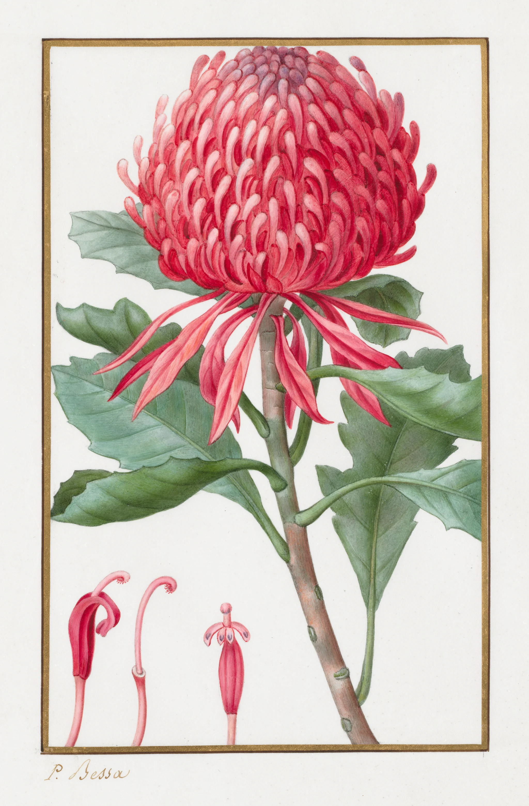

Around 1650 Gaston d’Orléans, the king’s uncle, kept a botanical garden at Blois and paid a young engraver from Langres, Nicolas Robert, to paint its plants as they flowered: one plant to a sheet, life size where it would fit, in watercolour on vellum. When Gaston died the young Louis XIV took the sheets for himself and kept the painter on, and for nearly two centuries afterwards there was always someone at the Jardin du Roi in Paris whose work was to add to the king’s vellums. They are still there, almost seven thousand of them, in the library of the Muséum. Every collector of flowers who could afford it wanted the same thing for his own garden: a florilegium, a book of its rarest plants, painted on skin, to be turned over in the hand.
Pancrace Bessa was born in Paris in 1772 and learned the trade in the studio of Gerard van Spaendonck, the professor of flower painting at the Jardin, alongside Pierre-Joseph Redouté. He drew most of the plates for the Herbier général de l’amateur, and for the Duchesse de Berry he painted hundreds of flowers on vellum, for albums of her own. This one is a waratah from the sandstone country around Sydney, a plant few people in Paris had ever seen in flower.
Vellum is calfskin, soaked in lime until the hair slips, scraped, stretched on a frame and dried taut, then rubbed with pumice and chalk until it takes a brush. It is smooth, warm white and very slightly translucent, and nothing sinks into it. Paint stays on top, as bright as it went on, which is why patrons paid for it; and it stays soluble, which is what made it so hard to paint.

The drawing came first, in a hard, sharp graphite, light enough to disappear: the outline of the head, every floret in it, the edge of each leaf. Then the colour went on in thin transparent washes, one area at a time. On paper a wash soaks in and stays put. On vellum it stands on the skin as a pool, beads where it meets the dry surface, and dries with its pigment drawn to the rim; and a second wash brushed over it lifts the first. So the washes were kept few and pale, just the broad colour of the head, the bracts, the leaves and the stem.
The lights were not left as bare skin, as a watercolourist on paper would leave them. They were painted on top in body colour, pigment ground with lead white, which covers what is under it and dries pale and matte: the pink tips of the florets, the bloom on the leaves. Everything else was built with the point of a very small brush, nearly dry, in thousands of strokes laid side by side and across each other along the curve of every form, the way the miniature painters worked up a face. A stroke that small dries before it can disturb the paint beneath it. Done well, the hatching cannot be seen from a step away. There is only a flower.
What looks like one flower is a head of more than a hundred, packed on a cone and ringed by red bracts. Along the bottom of the sheet Bessa laid out a single one, taken apart for a botanist to read. The gold frame was ruled last, round all four sides, and the signature written under it in the same gold. The sheet is almost two hundred years old, and on vellum the red is as fierce as the day it dried.